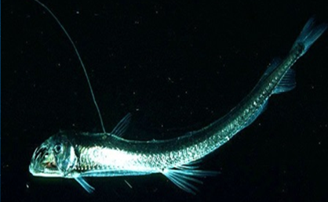

СЕМЕЙСТВА Хаулиоды (лат. Chauliodus) — род глубоководных (батипелагических) рыб из семейства стомиевых (Stomiidae)
ГЛУБИНА:от 400 до 1000 метров
КОГДА ОТКРЫЛИ: был описан немецкими учёными Маркусом Блохом и Иоганном Готтлобом Шнайдером 1801 года
ТИП ПИТАНИЯ: хищник
демонстрирует скрытное поведение в естественной среде обитания. Некоторые особенности поведения:
Ночной образ жизни — в темноте рыба становится активным охотником, используя острые чувства для обнаружения пищи.
Прятание среди водорослей, коряг и других укрытий — способность быстро менять цвет и текстуру кожи помогает сливаться с окружающей средой, что делает рыбу практически невидимой для хищников.
Быстрое передвижение в воде — рыба может развивать значительную скорость, что помогает ей в охоте и в избегании опасностей. В моменты стресса или угрозы рыба может резко менять направление, что делает её трудной целью для хищников.

наверх